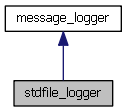
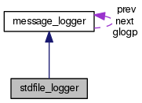

message logger for which std and error streams may be specified More...
#include <logexc.h>
Inheritance diagram for stdfile_logger:

Collaboration diagram for stdfile_logger:

Additional Inherited Members |
 Public Member Functions inherited from
Public Member Functions inherited from Detailed Description
message logger for which std and error streams may be specified
The documentation for this class was generated from the following file:
- logexc.h